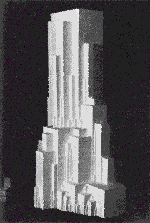

| Kazimir Malevich was an important figure in Russian and
Soviet art and architecture in the early 20th century. |
| Largely self-educated, Malevich was from the
beginning of his artistic career, |
"not concerned with nature or
analyzing visual impressions, but with man and his relation to the
cosmos." (Gray, pg 145) |
| Much of his work belongs to the Suprematist
school. |
| During the 20s, he began expressing architectural projects
as 3-dimensional sculptures. |
| Some examples of this Arkhitektonics
are marvelous instances of fractals in architecture. |
| Malevich creates
buildings with ambiguous scales, erasing the difference in scale
between buildings and people. |
| This is achieved by surrounding the
largest component of a building with a cascade of smaller and
smaller copies, number and scale satisfying an approximate
1/f relation (The smaller the
component, the more of them). |
|
 |
| Click the picture for an enlargement in a new window. |